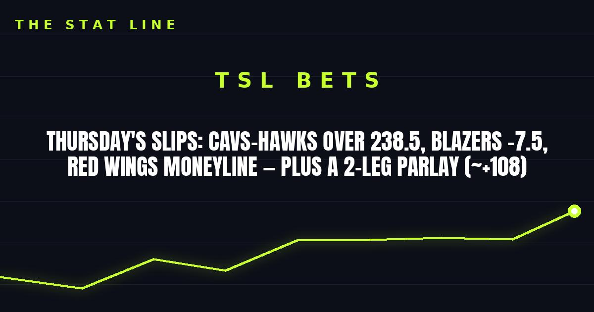

Thursday's Slips: Cavs-Hawks Over 238.5, Blazers -7.5, Red Wings Moneyline — Plus a 2-Leg Parlay (~+108)
Three clean plays for Thursday night: the points in a back-to-back rematch in Atlanta, the unbeaten Blazers laying points at home against the unbeaten Grizzlies, and Detroit at home against a winless-on-the-road Chicago team. The Pelicans-Kings winless bowl is skipped on purpose.

Game slip: Cleveland Cavaliers at Atlanta Hawks
• Matchup: Cleveland Cavaliers (3-1) at Atlanta Hawks (2-3)
• Time/channel: Thursday, 8:00 p.m. ET, NBA TV, from State Farm Arena in Atlanta
• Odds (FanDuel): Hawks -1.5; total 238.5
• Injury report: Hawks — Mouhamed Gueye out (foot surgery over the summer), Henri Veesaar out for the season. Cavaliers — Nae'Qwan Tomlin out (lower back stress reaction, 3-4 weeks). No fresh flags on either team's core scorers.
• Storylines: (1) Both teams are on the second night of a back-to-back — Cleveland won 121-111 at Washington on Wednesday, Atlanta lost 129-117 to Miami. (2) Atlanta's last two games averaged 240.5 combined points, and the Hawks are scoring 121 a night. (3) Atlanta has lost three straight since its opening-night win; Cleveland has won three straight.
The bet: Over 238.5. Two tired teams, two leaky defenses, and a total built for a shootout. The honest caveat: second nights of back-to-backs can also produce dead legs and bricked jumpers — this needs both offenses to show up, not just one.
Game slip: Memphis Grizzlies at Portland Trail Blazers
• Matchup: Memphis Grizzlies (4-0) at Portland Trail Blazers (3-0)
• Time/channel: Thursday, 10:00 p.m. ET, NBA League Pass, from Moda Center in Portland
• Odds (FanDuel): Trail Blazers -7.5; total 234.5; moneyline Trail Blazers -295, Grizzlies +240
• Injury report: Grizzlies — no players listed on the injury report. Trail Blazers — Shaedon Sharpe out (knee), Chris Youngblood questionable (ankle). Sharpe's absence is a known, season-long situation, not a fresh flag.
• Storylines: (1) Somebody's unbeaten run ends — and it's Ja Morant's first game against his former team since Memphis moved on from him in the offseason. (2) Portland is averaging 129.3 points per game at home on 51.1% shooting, blending Morant with a returning Damian Lillard. (3) Memphis is 4-0, but against a soft early schedule, and has yet to face a real road test like this one.
The bet: Trail Blazers -7.5. The better team, the louder building, the hotter offense — and 7.5 is a fair price for it. The honest caveat: laying 7.5 against an unbeaten team is never comfortable, and Memphis is 4-0 against the spread for a reason. This is a form-and-home-court play, not a mismatch.
Game slip: Chicago Blackhawks at Detroit Red Wings
• Matchup: Chicago Blackhawks (4-8) at Detroit Red Wings (5-4-3)
• Time/channel: Thursday, 7:30 p.m. ET, ESPN+, from Little Caesars Arena in Detroit
• Odds (DraftKings): Red Wings -180, Blackhawks +150
• Injury report: Red Wings — Marco Kasper and Mason Appleton on injured reserve (both out since early October), Albert Johansson out (undisclosed), Daniil Tarasov day-to-day; Dylan Larkin missed Wednesday's practice for a maintenance day and is expected to play. Blackhawks — Bowen Byram day-to-day (upper body, expected back Thursday). No fresh star-level flags on either side.
• Storylines: (1) Patrick Kane returns to Detroit — the former Red Wing is back at Little Caesars Arena in a Blackhawks sweater. (2) Detroit has picked up points in eight of twelve games and just beat Edmonton 4-3 in a shootout on the road. (3) Chicago is 4-8 and has yet to earn a point on the road this season.
The bet: Red Wings moneyline (-180). The price is steep, but Detroit is the more reliable team at home against a road team that has not won away from Chicago yet. The honest caveat: -180 means you are paying for certainty you do not fully have — Detroit is scoring just 2.58 goals per game, so this could easily be a one-goal game late.
The parlay (2 legs, ~+108)
• Trail Blazers moneyline (-295) + Red Wings moneyline (-180) — about +108 at those prices. Two home favorites, no lottery tickets. Odds move through the day — check the book before you bet.
Skipped on purpose
• Pelicans vs. Kings: Two winless teams (both 0-4), and laying 5.5 points on a team that has not won a game yet is not a quality play. Sacramento is also without Keegan Murray, its best Williamson defender, and New Orleans is without Yves Missi (knee). Pass — somebody has to win, but nobody has to be bet on.
• The rest of the NHL slate: Ten games is a lot of noise; the Red Wings game is the one with a clean home-favorite story. The others stay untouched.
No guaranteed wins, no ten-leg tickets — just three plays with real reasoning behind them. If gambling stops being fun, call 1-800-GAMBLER.
Sources: FanDuel — Hawks vs. Cavaliers, Sports Mole — NBA picks today, October 29, FanDuel — Trail Blazers vs. Grizzlies, PickDawgz — Grizzlies vs. Trail Blazers, Inside the Rink — Blackhawks at Red Wings preview, The Hockey News — Red Wings injuries, Detroit Free Press — Larkin maintenance day